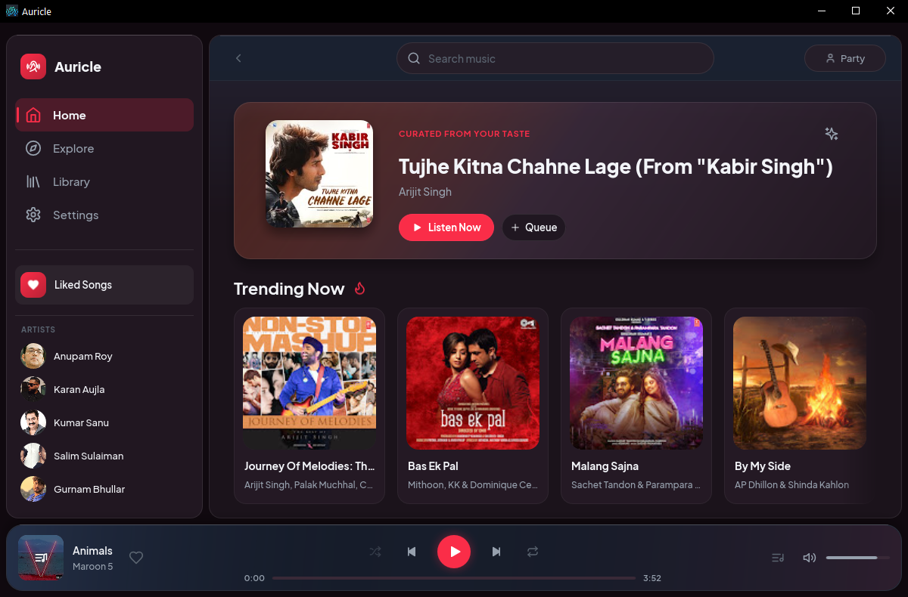
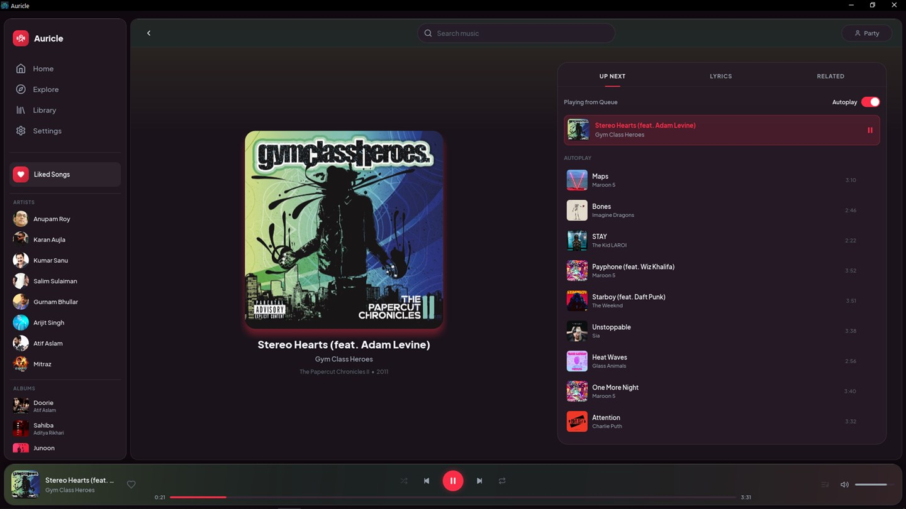
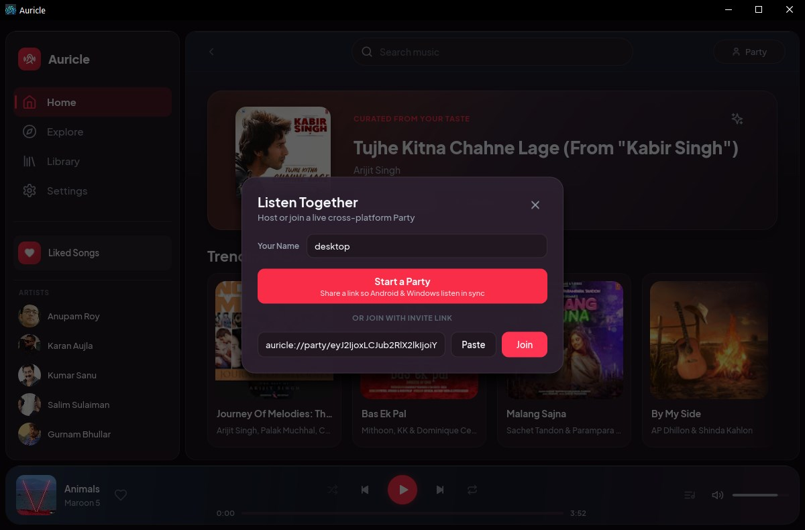
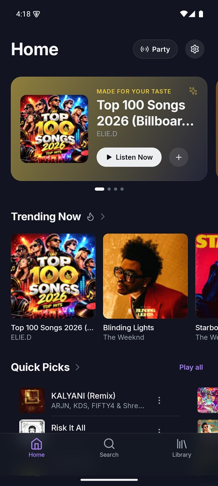
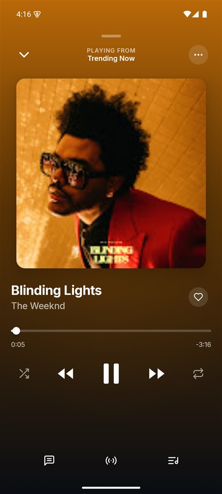
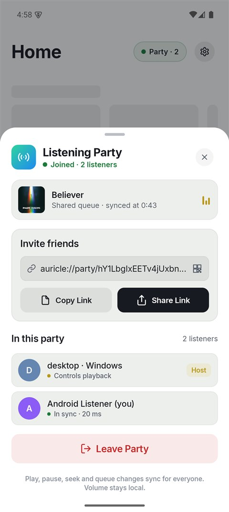

Auricle
A fast, native music player for the YouTube Music catalogue on Windows (Rust + Slint) and Android (Kotlin + Compose + Rust). Enjoy dynamic Material You themes, split Now Playing with sing-along lyrics, local audio caching, and real-time P2P Listen Together sync across devices.

Modernized Rust + Slint desktop shell with Material You dynamic accents, personalized taste hero, and collapsible sidebar.

Split Now Playing stage with album-driven Oklab color themes, Up Next queue, live Lyrics (with English sing-along toggle), and Related tracks.

Host or join a live cross-platform Party between Windows and Android via shareable auricle://party/... links — peer-to-peer with zero servers.
Everything you need to listen — without the bloat
A native desktop player designed for low resource usage, responsive playback, and local-first privacy.
Listen Together (P2P Party)
Sync playback, seek position, and queues live between Windows and Android over encrypted Iroh QUIC connections with relay fallback — no central servers or accounts.
Dynamic Material You Themes
Smooth Oklab accent animations derived from the current album cover, glassmorphic surfaces, and low-CPU idle redraws.
Split Now Playing & Lyrics
Dedicated Now Playing stage pairing full-size artwork with Up Next, Lyrics (plus an English sing-along toggle), track credits, and Related music.
Windows Media Keys & Device Follow
Native Windows media flyout (SMTC), hardware play/pause/skip keys, and seamless switchover when plugging or unplugging headphones or Bluetooth audio.
Catalogue Search & Discographies
Search songs, albums, artists, and playlists with history, mixed previews, and popularity-ranked artist discography shelves with type filters.
Smart Queue, Shuffle & Autoplay
Manage upcoming tracks with user-queue shuffle, repeat modes (off / all / one), preserved queues, and continuously topped-up related autoplay.
Local Library & LRU Audio Cache
Keep liked songs, playlists, followed artists, saved albums, and history on your PC alongside a size-limited audio cache (500 MB default).
Native Rust, Tray & Privacy-First
Built with Rust and Slint (no Electron), minimize-to-tray background playback, strict TLS, opt-in browser cookies, and zero telemetry.
Auricle for Android
Take Auricle on mobile with our open-source Android companion built with Kotlin, Jetpack Compose, Media3, and the same Rust Iroh P2P engine as Windows.
- Cross-platform Party Sync: Join a Windows host from your phone (or host from Android) with ~20 ms P2P clock sync.
- Adaptive Material You UI: Full-bleed Now Playing, synced lyrics, dark & light themes, and background Media3 playback.
- Zero Play Services & Zero Trackers: Signed GPLv3 APKs (
arm64-v8a,universal, andx86_64) verified withSHA256SUMS.txt.



Up and running in minutes
Three quick steps on Windows — or install the APK directly on Android.
Download Auricle
Install via GitHub Releases, SourceForge, WinGet, Scoop, or Chocolatey — no account or Visual C++ Redistributable required.
Install optional add-ons
On Windows first launch, optionally install yt-dlp, ffmpeg, and Deno with one click from their official GitHub releases, or use your own on PATH.
Listen solo or together
Search the catalogue, build your local library, or click Party to share an invite link and listen in sync with friends across Windows and Android.
Get Auricle
Free, open source, and synced across Windows and Android.
🪟 Windows Desktop
Choose the standard setup.exe installer or the self-updating portable ZIP. Also mirrored on SourceForge alongside matching Android APKs.
🤖 Android Companion
Signed APKs for arm64-v8a (recommended for modern phones), universal, and x86_64 — also mirrored inside each SourceForge version folder.
WinGet
winget install californiaAlmonds.Auricle
Chocolatey
choco install auricle
Scoop
scoop bucket add auricle https://github.com/californiaAlmonds/scoop-auricle && scoop install auricle
Windows 10/11 64-bit requires no Visual C++ Redistributable. Streaming on Windows uses optional third-party add-ons. Android requires Android 8.0 (API 26)+.
Why I built Auricle
Mainstream desktop music apps often used far more RAM and GPU than I wanted while gaming or working. The open-source options I tried either relied on heavy embedded browsers or missed features I cared about, so I built Auricle in Rust and Slint — and later paired it with a native Android companion that syncs peer-to-peer.
The goal is a clean, responsive player with low background overhead, zero accounts, and zero hosted servers. Feedback on usability, playback, Party sync, or resource usage is always welcome via Windows issues or Android issues.
Unsigned Windows builds note: Because Auricle is an indie open-source release without a commercial Authenticode certificate yet, Windows SmartScreen or heuristic antivirus scanners may warn on the installer. You can verify checksums, inspect the source code, or build from source — never disable antivirus protection to test software.
Built on native foundations
Shared Rust networking and P2P sync powering native Windows and Android shells.
Common questions
Can't find an answer? Open an issue on GitHub.
How does Listen Together (Party Sync) work without a server?
Party Sync uses Iroh encrypted peer-to-peer QUIC connections with automatic relay fallback across Wi-Fi and mobile data. Starting a Party generates a private auricle://party/... invite link containing a random room secret; only playback commands, timestamps, and track IDs are synced between peers.
Does Auricle bundle or distribute yt-dlp / ffmpeg / Deno?
No. On Windows, Auricle never bundles third-party tools. The optional in-app installer downloads yt-dlp, ffmpeg, and Deno directly from their official GitHub releases with your consent, or you can use your own copies on PATH. Once yt-dlp is installed, Auricle keeps it updated at most once a week in the background.
What data does Auricle collect?
None is sent to the developer: there are no accounts, telemetry, or analytics. Your library, history, and settings stay on your device. Read the privacy policy for full details. Browser cookies are off by default unless you enable them in Settings.
How do I build from source?
Windows requires Rust ≥ 1.91 and the MSVC C++ Build Tools; clone californiaAlmonds/auricle and run cargo run --bin auricle. Android build steps (Gradle + cargo-ndk) are documented in californiaAlmonds/auricle-android.